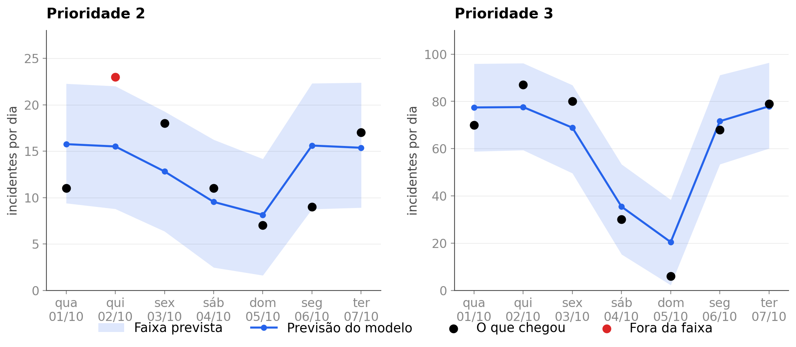

<style>
/* ═══ slide 12 · os próximos sete dias ════════════════════════════════════════
   O slide do Prophet, e a saída do produto em vez de uma métrica sobre ele: os
   sete dias que a operação lê no dia 1º de outubro de 2025, com a faixa de cada
   dia e o ponto do que de fato chegou.

   Três versões antes desta. A primeira era "chegam 16, erramos 4" em número
   grande com barra de proporção, e o dono do projeto pediu algo mais imersivo.
   A segunda desenhava a tira em HTML, com as faixas em pixel — funcionou, e ele
   pediu para manter o padrão da casa e fazer o gráfico no matplotlib, que é
   mais fácil de ler. É esta.

   O ponto vermelho é o único fora da faixa e fica no slide de propósito.
   Esconder um ponto de quatorze seria pior que mostrá-lo, e a ressalva da
   janela inteira está escrita no pé.

   Figura em dpi 200, de _figuras_previsao.py. As duas prioridades no mesmo
   peso, regra 10, com escalas próprias porque os volumes são diferentes.
   ══════════════════════════════════════════════════════════════════════════ */
.pvs .body{padding-top:14px}
.pvs .tt{font-size:52px;letter-spacing:-1.9px}

.pvs .cena{flex:1;display:flex;align-items:center;justify-content:center;
  margin-top:14px;min-height:0}
.pvs .quadro{padding:20px 24px}
.pvs .fig{display:block;width:1120px}

/* o fecho: o número da janela e a ressalva, lado a lado */
.pvs .fecho{display:flex;align-items:center;gap:32px;margin-top:auto;padding-top:20px;
  border-top:1px solid #DCE4EF}
.pvs .fecho .n{display:flex;align-items:baseline;gap:15px;flex-shrink:0}
.pvs .fecho .n .v{font-size:60px;font-weight:900;letter-spacing:-2.5px;line-height:.86;
  color:var(--head);font-variant-numeric:tabular-nums}
.pvs .fecho .n .k{font-size:17px;line-height:1.34;color:var(--tx);max-width:196px}
.pvs .fecho .n .k b{color:var(--head);font-weight:700}
.pvs .fecho .obs{font-size:15px;line-height:1.46;color:var(--tx2);padding-left:32px;
  border-left:1px solid #DCE4EF}
.pvs .fecho .obs b{color:var(--head);font-weight:700}
</style>

<section class="slide light pvs" data-slide="12" data-var="a" data-quem="ana">
  <div class="mesh"></div><div class="grid-bg"></div>
  <div class="hd">
    <div class="bi"><svg viewBox="0 0 28 28" fill="none"><path d="M6 22L12 14L16 17L22 8" stroke="#fff" stroke-width="2.2" stroke-linecap="round" stroke-linejoin="round"/><circle cx="22" cy="8" r="3" stroke="#3B82F6" stroke-width="1.5"/><circle cx="22" cy="8" r="1.2" fill="#3B82F6"/></svg></div>
    <div class="bn">Cronos</div><span class="bt">BANCA FINAL &middot; 15/09/2026</span>
    <div class="tag">Avaliação &middot; a previsão de 1º/10 contra a semana real</div>
  </div>
  <div class="body">
    <span class="eb"><span class="rv" style="--d:240ms">Prophet &middot; quantos incidentes chegam</span></span>
    <h1 class="tt"><span class="mask" style="--d:340ms"><span>Os próximos sete dias</span></span></h1>

    <div class="cena">
      <div class="quadro cartao rv3" style="--d:640ms">
        
      </div>
    </div>

    <div class="fecho rv" style="--d:1240ms">
      <div class="n">
        <span class="v"><span class="ct" data-to="13" data-delay="1440">0</span></span>
        <span class="k">dos 14 dias caíram <b>dentro da faixa</b></span>
      </div>
      <p class="obs">Cada caixa é a faixa que o modelo deu para o dia, feita em 1º de outubro. O ponto vermelho é o único fora, <b>1 incidente acima</b> do teto. Na janela de teste inteira a faixa acerta entre <b>86% e 88%</b> dos dias na prioridade 2 e entre <b>59% e 61%</b> na prioridade 3.</p>
    </div>
  </div>
  <div class="ft"></div>
</section>
